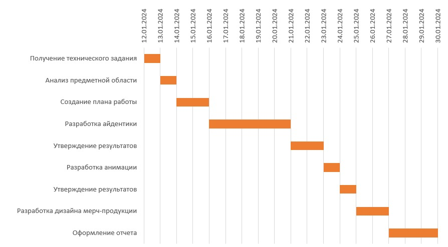

Анализ предметной области
Индивидуальное задание
Диаграмма Ганта
Диаграмма Ганта
Диаграмма Ганта — это тип столбчатых диаграмм, который используется для иллюстрации плана, графика работ по какому-либо проекту. Диаграмма Ганта состоит из горизонтальных полос, представляющих отдельные задачи или деятельности, расположенных вдоль временной шкалы. Длина каждой полосы отражает предполагаемую продолжительность выполнения соответствующей задачи. Таким образом, диаграмма Ганта позволяет визуально представить последовательность и продолжительность задач, а также их перекрывающиеся периоды.
Данная диаграмма представлена ниже
